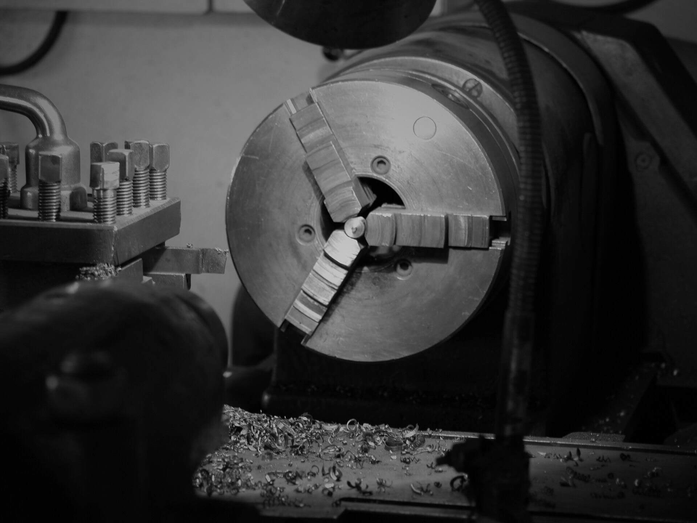

寔黈企業STONE VALVES
聯繫我們
寔黈企業STONE VALVES
聯繫我們
三十餘年的氣動閥專業
寔黈實業有限公司是一家專門從事氣動執行器、氣動閥門生產三十餘年的台灣企業。產品按國家標準及美國、德國、日本標準生產，以 CNC 電腦速控加工機械生產，品質保證精密。
產品已通過 ISO9001：2000 CE 品質管理體系認證，所生產的閥門系列產品廣泛應用於工業自動化、石化工業、染整機械廠、廢水處理廠等行業。

品質管理體系認證
國家、美國、德國、日本
「品質求生存，
信譽求發展」
誠納四海商客，願與各位朋友長期共事，攜手共進，共創未來。
從氣缸到各式閥門
鋁合金氣缸、鑄鐵氣缸、法蘭口球閥、三片式牙口（焊口）球閥、三通球閥、二片式球閥、氣動控制閥、閘閥、止回閥、Y型牙口閥、減壓閥等。


多種閥體材質
廣泛應用於各行業
- 01工業自動化
- 02石化工業
- 03染整機械廠
- 04廢水處理廠
- 05工業用管道
- 06自動化機械工業
STONE Enterprise Co., Ltd. professionally manufactures actuators and various valves over 30 years. The products are based on the standards of GB, JB, API, JIS etc. We use speed controlled machining mechanism to assure the precision of our products.
The main products of our manufacture include aluminum alloyed actuator, cast-iron actuator, flange ended ball valve, three-piece cylinder actuated ball valve, soldered-connection ball valve, three-way valve, two-piece ball valve, air-operated control valve, gate valve, cut-off valve, thread Y stop valve, pressure reduce valve etc.
聯絡我們
- 地址泰山區中港西路136巷95-12號
- 客服專線(02) 2296-8958
- 傳真(02) 2296-8056
- E-mailshihtaoo@seed.net.tw
- 在 Google 地圖開啟